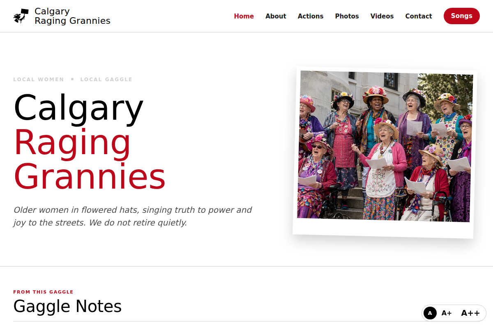
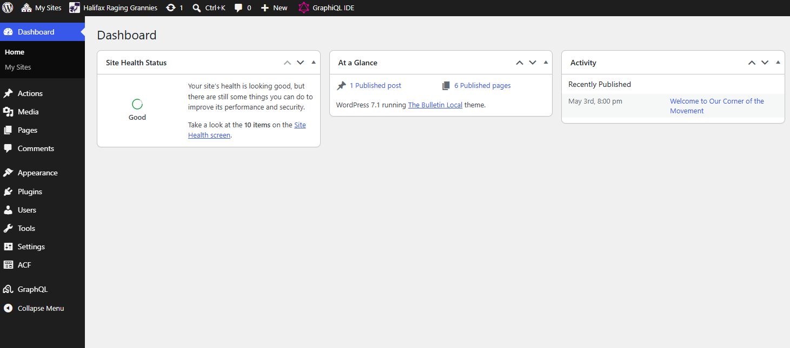
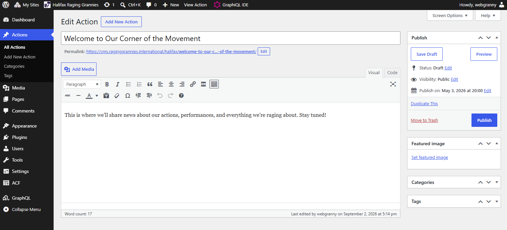
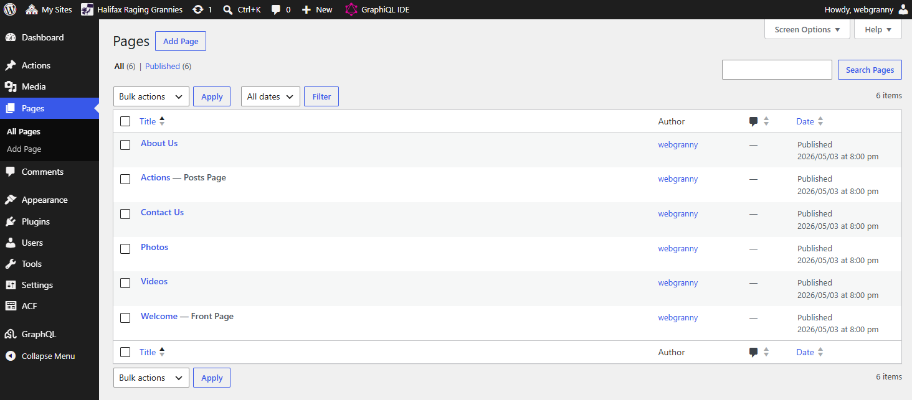

A short guide for the granny who tends the gaggle's website
Your gaggle's site mostly takes care of itself. The two things worth doing
regularly are posting an Action after your gaggle does
something (a protest, a performance, a meeting worth bragging about) and
keeping your About and Contact pages true. That's this whole
guide. Twenty minutes a month keeps a gaggle site lively.

A gaggle front page. Your Actions and Gaggle Notes appear here on
their own; the pages you tend live in the menu across the top.
1. Logging in
You need: your username and password
(they're on your cheat sheet, and Steph can resend them any time).
Go to your site's address and add /wp-admin
to the end. For example:
calgary.raginggrannies.org/wp-adminBookmark this page the first time. After that it's one click.
Type your username and password, then click
Log In.
You land on your site's dashboard: a menu down the
left side, your site's name at the top.

A gaggle site dashboard with the menu down the left side.
2. Posting an Action
You need: to be logged in. A photo from
the event makes the post shine, but it's optional.
In the left-side menu, click Actions,
then Add New.
Click where it says "Add title" and give the post a headline.
Say what happened: "We Sang at the Climate March" beats "March Update".
Click below the title and write what your gaggle did. A few sentences is
plenty. Write it like you'd tell a friend.
To add your photo: in the right-hand column, click
Set featured image, then
Upload files, and choose the photo from
your computer. Click the blue
Set featured image button to finish.
Click the blue Publish button at the top
right. It will ask once more; click Publish
again.
The post is now live. It appears on your site's front
page under "Recent Actions", and on the international site's news feed.

A gaggle site Edit Action screen.
If you can't find your post afterwards: check your
site's front page under Recent Actions. If it isn't there, it may still be a
draft: go back to Actions in the left menu, click your post's
title, and press Publish.
3. Updating a page (About, Contact, and friends)
You need: to be logged in.
In the left-side menu, click Pages.
You'll see a short list: About Us, Contact Us,
Photos, and so on.
Click the name of the page you want to change.
Click into the text and edit it just like a letter. Fix a name, update a
meeting time, refresh your story.
Click the blue Update button at the top
right.
Your changes are live right away.

A gaggle site Pages screen.
When you're ready for more
None of this is required, but it's there when you want it:
Photos page: pictures you attach to Action posts
gather automatically on your Photos page. Post Actions with photos and
the gallery builds itself.
Gaggle Notes: for things that aren't news, like a
songbook, a resource list, or your gaggle's history. Write a post the
usual way, and on the right side under Categories, tick
Gaggle Notes. It appears in its own spot on your front
page and never gets buried by newer Actions.
Your site's look (the big photo on your front page,
your tagline, a link to your YouTube channel, and whether Action lists show
photos): in the left menu under
Appearance, click Gaggle Settings.
If most of your Actions have no photos, ticking
Hide photos on Action lists there gives your site a
cleaner, text-first look.